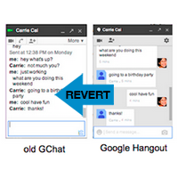
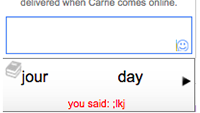
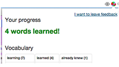

WaitChatter is a Chrome extension for Gchat that delights you with interactive vocabulary exercises while you're waiting for your conversation partner to respond.
1. If you have Hangouts enabled, revert to old Gchat. (You can revert back to Hangouts at anytime if you decide to uninstall WaitChatter.)
2. Download the Chrome extension and refresh Gmail. Your chatboxes should now display a learning panel. Try an exercise!
3. Change your language settings and track your progress by clicking on the globe icon in your Chrome browser on the right end of the URL box.
WaitChatter was built by Carrie Cai and is part of ongoing research at MIT CSAIL. Read more about WaitChatter in our published papers on wait-learning here (CHI 2014 Extended Abstract) and here (CHI 2015).
This site was built by Anji Ren and Carrie Cai.
WaitChatter isn't appearing under my chatbox.
1) Are you currently using Google Hangout?
To use WaitChatter, revert to GChat in two simple steps. etc.
2) Do you have chat-related Google Labs items?
Using a Google Labs items that changes the appearance of your Gchat could interfere with WaitChatter appearing correctly.
What information does WaitChatter access?
For your privacy, this public version of WaitChatter does not pull any vocabulary words from your chat conversations, and does not log any content from your chats. It does keep track of what vocabulary words you have answered correctly and incorrectly so that it can select the best word to quiz you on next.